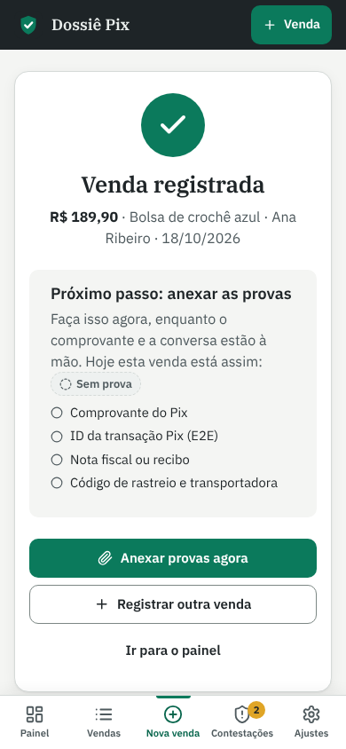
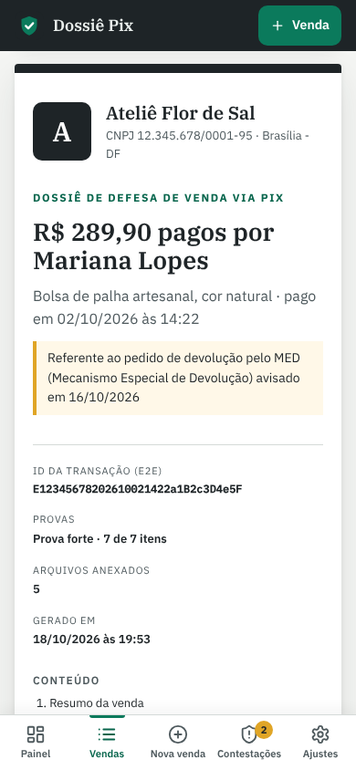

1
Registre a venda
Valor, cliente, produto e ID do Pix em menos de um minuto, logo depois de receber.

Para quem vende por Pix
O Dossiê Pix guarda o comprovante, a conversa, a nota e a entrega de cada venda, mostra o que falta e monta um dossiê organizado para você enviar ao seu banco quando o pagador pedir devolução pelo MED.
7 dias grátis. Cancele quando quiser. Sem fidelidade.
Quando o banco avisa de um pedido de devolução, as provas estão espalhadas e o prazo já está correndo.
Comprovante no app do banco, conversa no WhatsApp ou no Direct, rastreio no site da transportadora.
Sem um checklist, você só descobre que não guardou o comprovante de entrega na hora em que precisa dele.
Montar tudo às pressas, num e-mail cheio de prints soltos, toma uma noite inteira.
Feito para o celular, porque é nele que a venda acontece.
Valor, cliente, produto e ID do Pix em menos de um minuto, logo depois de receber.

O checklist mostra a força da prova e diz o que falta, item por item, com o motivo.
Se pedirem devolução, abra a contestação com o prazo do seu banco e salve o dossiê em PDF.

O Dossiê Pix organiza a sua defesa; quem decide é a instituição. Ele não é aconselhamento jurídico e não garante o resultado da contestação. Prazos e regras do MED dependem do Banco Central e do seu banco: no app, você configura o prazo que a sua instituição informar.
Todos começam com 7 dias grátis. A primeira cobrança só acontece depois do teste.
Dossiê extra acima do limite do plano: R$ 9,90. Plano anual: pague 10 meses e use 12. Preços de demonstração, ainda em validação.
O Dossiê Pix está começando. Os primeiros lojistas ajudam a decidir o que entra no produto, falam direto comigo e mantêm o preço de fundador enquanto a assinatura estiver ativa.
Não. Ele organiza as provas e monta um documento claro. Quem analisa e decide é a instituição, seguindo as regras dela e do Banco Central.
Depende das regras vigentes do Banco Central e da sua instituição. Por isso o prazo no app é um campo que você preenche com o que o seu banco informar.
Não. O Dossiê Pix funciona com qualquer banco. Você continua respondendo pelo canal da sua instituição, só que com o dossiê pronto.
Sim. É um app web: abre no navegador e pode ser instalado na tela inicial, sem baixar nada da loja de apps.
Você usa tudo por 7 dias. Se não quiser continuar, cancela antes do fim e nada é cobrado.
Sim, sem multa. Antes de cancelar você pode baixar uma cópia de todos os seus dados.
Mais respostas na central de ajuda.